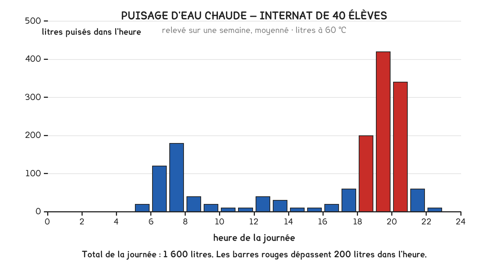
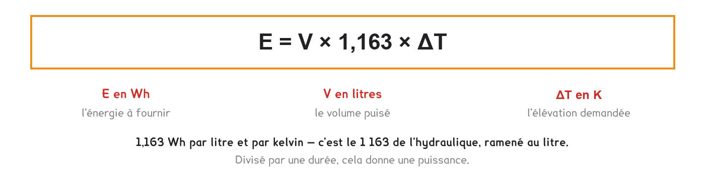

BTS FED option C · 2e année
L'énergie d'une journée d'eau chaude est une chose. La puissance à installer en est une autre, et c'est le stockage qui sépare les deux.
1 outil · 8 questions · 9 replis · 2 figures
Savoirs travaillés
Un savoir au niveau 3. Le référentiel classe B3-2 au niveau maîtrise d’outils pour l’option C : savoir faire, seul, sans guidage. L’ECS tombe presque à chaque session, souvent dans la même partie que la sous-station.
Chauffer un litre d’eau de 10 à 60 °C coûte la même chose, qu’on le fasse à six heures du matin ou étalé sur la journée. L’énergie d’une journée se calcule donc à partir du seul volume total.
E = V × 1,163 × ΔT
Le 1,163 est le même qu’en chauffage (c’est ρ·Cp/3600) mais rapporté au litre et non au mètre cube.

C’est là que tout se joue. Si la production se fait au fil de l’eau, sans stockage, l’appareil doit couvrir seul l’heure la plus chargée. Sa puissance se calcule sur cette heure-là, pas sur la moyenne.
Un ballon change la question. Il accumule pendant les heures creuses ce qui sera puisé pendant la pointe : la production peut alors être dimensionnée bien en dessous du maximum.
Le stockage ne réduit pas l’énergie. Il réduit la puissance. La facture ne change pas ; l’appareil, si, et son prix, son encombrement, son abonnement.
Mettez le stockage à zéro : la puissance grimpe. Montez-le jusqu’à absorber toute la pointe : la puissance s’effondre, et l’énergie du jour ne bouge pas d’un kilowattheure.
Entre le ballon et le point de puisage le plus éloigné, l’eau refroidit dans le tube. Sans rien, l’usager laisserait couler plusieurs litres avant d’avoir chaud.

Une boucle de circulation maintient l’eau en mouvement dans la distribution. Le prix à payer est double : les pertes du bouclage tournent toute l’année, et le circulateur consomme en permanence.
C’est aussi une exigence sanitaire : la légionelle prolifère entre 25 et 45 °C dans une eau stagnante. Les températures retenues ne sont donc pas négociables, 60 °C au ballon, 55 °C en tout point de la boucle, 50 °C maximum au puisage pour éviter la brûlure.
Mission chantier n° 3
Repérer le mode de production d’ECS du bâtiment de l’entreprise : instantané, accumulation, semi-accumulation. Relever le volume du ballon s’il y en a un, et la puissance de l’échangeur ou de la résistance.
Vérifier la présence d’une boucle de circulation, et relever la température de consigne. Demander si un carnet sanitaire est tenu.
Pour aller plus loin
Trois familles, trois compromis entre puissance et volume.
| Volume stocké | Puissance | Où on la rencontre | |
|---|---|---|---|
| Instantané | nul | très élevée | logement individuel, petits besoins, ou là où la légionelle interdit le stockage |
| Accumulation | grand | faible | collectif, internat, hôtel |
| Semi-accumulation | réduit | moyenne | tertiaire, quand la place manque |
La semi-accumulation est le compromis le plus fréquent en tertiaire : un ballon modeste, une puissance d’échange soutenue, et une régulation qui reconstitue le stock entre deux pointes.
Le choix n’est pas seulement technique. Le sujet U41 2026 impose une production instantanée pour les douches des ateliers, non pas pour la performance mais pour supprimer tout volume stagnant, donc tout risque de légionelle. L’inconvénient est assumé : une puissance de pointe très élevée, et un appel de puissance sur le réseau de chaleur qui se paie à l’abonnement.
Une boucle de distribution perd de la chaleur en permanence, chauffage arrêté compris. L’ordre de grandeur se calcule simplement : une longueur de tube calorifugé, une déperdition linéique de 8 à 15 W/m selon le diamètre et l’isolant, et 8 760 heures par an.
Cent mètres de boucle à 10 W/m, c’est 1 kW en continu, soit près de 8 800 kWh par an, souvent davantage que l’eau chaude réellement puisée dans un petit tertiaire.
Trois leviers, dans cet ordre :
C’est l’un des rares postes où la conception pèse plus que l’équipement : aucun ballon performant ne rattrape une boucle mal tracée.
Tout établissement recevant du public équipé d’un réseau d’eau chaude collectif doit tenir un carnet sanitaire : relevés de température, opérations d’entretien, analyses de légionelles.
Les points de contrôle sont fixés par arrêté : température en sortie de production, au retour de boucle, et au point de puisage le plus éloigné. Un relevé hors tolérance déclenche une procédure, purge thermique, chloration, analyse.
Pour un technicien de bureau d’études, cela se traduit par des obligations dès la conception : prévoir les points de mesure, rendre le fond de ballon vidangeable, proscrire les bras morts, ces antennes de tuyauterie où l’eau ne circule jamais.
Un bras mort de quelques dizaines de centimètres suffit à contaminer un réseau entier. C’est le genre de détail qu’on ne voit pas sur un schéma de principe, et qui se paie sur le chantier.
Le calcul complet tient en quatre lignes, et il se refait à l’identique quel que soit le bâtiment. Prenons un internat : 2 400 litres par jour, eau froide à 10 °C, eau chaude à 60 °C, et une pointe de 900 litres entre 19 et 20 heures.
1. L’énergie de la journée. Elle ne dépend que du volume total.
E = 2 400 × 1,163 × 50 = 139 560 Wh = 139,6 kWh
2. La puissance en production instantanée. L’appareil doit couvrir seul l’heure la plus chargée, sans aucune réserve.
P = 900 × 1,163 × 50 = 52 335 W = 52,3 kW
3. La puissance en semi-accumulation. Un ballon de 500 litres est plein au début de la pointe. Il fournit ces 500 litres ; la production ne couvre que la différence.
P = (900 − 500) × 1,163 × 50 = 23,3 kW, soit 56 % de moins
4. La vérification qu’on oublie : le ballon doit se recharger. Reconstituer les 500 litres demande 29,1 kWh. À 23,3 kW, il faut 1 h 15. Le profil de puisage laisse-t-il ce creux avant la pointe suivante ? Dans un internat, oui, la nuit est vide. Dans un hôtel avec deux pointes rapprochées, la réponse peut être non, et le ballon doit alors grossir.
L’énergie de la journée est la même dans les deux cas : 139,6 kWh. Le ballon n’économise pas un kilowattheure, il divise la puissance par plus de deux. Puissance et énergie répondent à deux questions différentes, et les confondre est l’erreur qui coûte le plus cher sur ce savoir.
Le contrôle de vraisemblance. Une puissance d’ECS se compte en dizaines de kilowatts pour un collectif, en quelques kilowatts pour un logement. Si vous trouvez 52 kW pour une maison individuelle, vous avez pris le volume de la journée pour celui de la pointe.
Trois nombres, trois raisons différentes, et un seul d’entre eux est un confort. C’est une question de justification classique, et elle se traite en trois phrases.
| Température | Où | Pourquoi |
|---|---|---|
| 60 °C | au ballon | détruire la légionelle, qui prolifère entre 25 et 45 °C |
| 55 °C | en tout point de la boucle | ne jamais retomber dans la plage de prolifération, même au point le plus éloigné |
| 50 °C max | au puisage | éviter la brûlure : c’est le seul des trois qui protège l’usager |
Les deux premières s’opposent à la troisième, et c’est tout le problème : on stocke chaud pour la sécurité sanitaire, on distribue tiède pour la sécurité physique. La conciliation se fait par un mitigeur thermostatique, posé au plus près du point de puisage, jamais au départ du ballon, sinon toute la distribution retombe dans la plage à risque.
Baisser la consigne du ballon pour économiser est un raisonnement qui se tient sur le plan énergétique et qui est interdit sur le plan sanitaire. À l’épreuve comme en entreprise, une réponse qui propose de descendre sous 60 °C au stockage est fausse, quel que soit le gain calculé.
Ce qu’un brûlure coûte en secondes, et qui explique le 50 °C : plus l’eau est chaude, plus la brûlure est rapide. C’est ce qui rend la protection indispensable dans les établissements accueillant des enfants, des personnes âgées ou handicapées, et ces établissements sont précisément ceux qu’on rencontre dans les sujets d’épreuve.
Les valeurs exactes et les locaux concernés sont fixés par la réglementation sanitaire ; elles se lisent au CCTP ou dans le texte que le sujet cite, jamais de mémoire. Ce qui se retient, c’est le triangle des trois températures et la raison de chacune.
Dans un immeuble raccordé à un réseau de chaleur, l’ECS n’est pas produite par une chaudière mais par un échangeur, et la partie « sous-station et ECS » d’un sujet les traite ensemble. C’est 19 % de l’épreuve, et elle tombe à chaque session.
Le montage. Le primaire vient du réseau urbain, chaud et sous la pression de l’exploitant. Le secondaire est l’eau sanitaire du bâtiment. Ils ne se mélangent jamais : l’échangeur sépare les fluides, ce qu’une bouteille de découplage ne fait pas. C’est le prolongement direct de la séance 7.
Ce que le dossier donne, et ce qu’il demande de trouver :
| Donné | À calculer |
|---|---|
| Régime primaire, par exemple 90/60 | le débit primaire |
| Régime secondaire, 10/60 | le débit secondaire |
| Puissance de l’échangeur | ou l’inverse : la puissance à partir des débits |
La formule est celle de toujours, appliquée deux fois : P = Q × 1 163 × ΔT, une fois de chaque côté. Et la puissance est la même des deux côtés, c’est un échangeur, il ne crée rien. Ce sont les débits et les écarts qui diffèrent.
Un écart primaire large (90/60, soit 30 K) demande peu de débit. Un écart secondaire large aussi. C’est pourquoi l’exploitant du réseau impose une température de retour maximale : un retour trop chaud signifie que le bâtiment tire trop de débit pour la puissance qu’il consomme, et ça pénalise tout le réseau. Cette contrainte se retrouve au CCTP, et elle est justifiable à l’épreuve.
Le comptage. Un compteur d’énergie thermique est posé au primaire : deux sondes de température et un débitmètre, dont le calculateur intègre Q × 1 163 × ΔT au fil du temps. C’est ce compteur qui fait la facture, et c’est le savoir B9 de la séance 20.
Le calcul de la partie « niveau attendu » suppose qu’on connaît déjà le volume du ballon. Un bureau d’études, lui, le détermine, et la méthode est graphique, élégante, et se comprend en une figure.
On trace deux courbes cumulées sur la même journée :
Le volume du ballon est le plus grand écart vertical entre les deux courbes, mesuré quand le besoin est en avance sur la production. C’est exactement la réserve qu’il a fallu constituer pour ne jamais manquer.
Ce que la figure montre immédiatement, et qu’aucune formule ne dit :
La contrainte que la méthode révèle, et qu’on oublie toujours : la droite de production doit rattraper le besoin avant la pointe suivante. Sinon le ballon part vide à la deuxième pointe, et le dimensionnement s’écroule. C’est la vérification de recharge, faite graphiquement.
La méthode s’applique telle quelle à un autre problème du programme : le dimensionnement d’un stockage d’énergie sur une installation solaire, ou d’un ballon tampon sur une pompe à chaleur.
L’eau chaude sanitaire est le meilleur terrain du solaire thermique, et pour une raison simple : le besoin existe toute l’année. Un chauffage solaire ne sert qu’en hiver, quand le soleil manque ; l’ECS se consomme en juillet comme en janvier.
Le montage type. Des capteurs, un ballon à deux échangeurs, le solaire en bas, où l’eau est la plus froide et où l’échange est donc le meilleur, l’appoint en haut, et une régulation différentielle : le circulateur solaire démarre quand le capteur est plus chaud que le bas du ballon d’un écart donné, et s’arrête sinon. Deux sondes, un comparateur : c’est la boucle la plus simple du programme, et c’est de la régulation, savoir B11.
Le taux de couverture. On ne dimensionne jamais le solaire pour tout couvrir : au-delà d’environ 60 % du besoin annuel, les capteurs surproduisent l’été, le ballon monte en surchauffe, et le surcoût ne se rentabilise plus. L’appoint n’est pas un aveu d’échec, c’est le dimensionnement juste.
La pompe à chaleur sur ECS, elle, pose un problème inverse et intéressant : son COP chute quand la température de production monte, or l’ECS demande 60 °C , la température la plus défavorable de tout le bâtiment. C’est le lien avec la séance 13 : plus l’écart entre l’évaporateur et le condenseur est grand, plus le COP s’effondre.
Deux réponses de bureau d’études : produire à 50 °C par la PAC et finir à 60 °C par un appoint électrique, ce qui préserve le COP sur l’essentiel de l’énergie ; ou choisir un fluide et un compresseur haute température, plus chers. Le sujet 2025 pose exactement cette question sous la forme du préchauffage de l’ECS par récupération sur les eaux grises, même logique : on préchauffe avec ce qui est gratuit, on finit avec ce qui est cher.
Cette séance a montré que l’eau chaude sanitaire se prépare à 60 °C et que le bouclage doit rester au-dessus de 50. C’est une contrainte sévère pour une pompe à chaleur, sauf pour une, qui est faite pour ça.
Le R744, c’est-à-dire le CO₂, a un GWP de 1 et travaille entre 80 et 120 bar. Au-dessus de 31 °C, il ne condense plus : il se refroidit sans changer d’état. On parle de cycle transcritique, et le condenseur devient un refroidisseur de gaz.
Là est tout l’intérêt. Un fluide qui condense cède sa chaleur à température constante : il chauffe mal une eau qui doit monter de 10 à 60 °C. Le CO₂, lui, se refroidit en glissant de 90 à 35 °C, ce qui épouse exactement la montée en température de l’eau sanitaire. Le mauvais élève du chauffage est le meilleur de l’eau chaude.
La conséquence, contre-intuitive : le rendement d’une PAC au CO₂ s’améliore quand l’eau d’entrée est froide. Un bouclage qui renvoie de l’eau à 50 °C au bas du ballon dégrade son COP, là où il serait sans effet sur une PAC classique. C’est pourquoi ces machines sont associées à des ballons fortement stratifiés, et pourquoi le piquage du bouclage y est un point de vigilance.
Ces pressions changent les règles de l’intervention. Un manifold de R410A ne tient pas 120 bar, et une bouteille de récupération non plus. Le CO₂ est aussi asphyxiant en fosse ou en local fermé, sans donner d’alerte. Rien de tout cela ne s’improvise avec le matériel du froid classique.
Cette page rappelle la séance. Elle ne remplace pas le polycopié et ne donne aucun corrigé. Tous les calculs se font dans votre navigateur ; rien n'est enregistré.